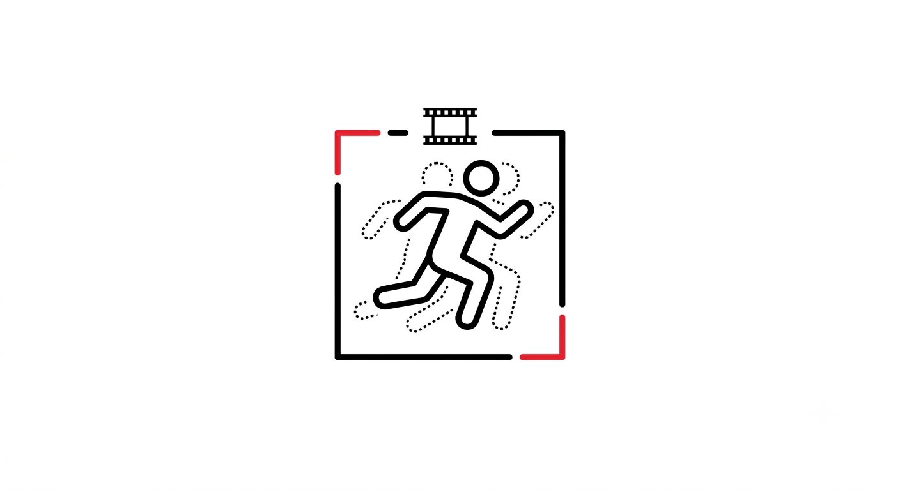

An end-to-end pipeline for classifying complex temporal human movements from raw video. Combines CNN-based spatial feature extraction with LSTM sequence modelling — the system learns from how a motion unfolds over time, not just what a single frame looks like. The core challenge was structuring high-dimensional sequential data so the temporal signal didn't get washed out, then tuning a deep network that was actually optimizing for the right thing.
- TensorFlow
- Keras
- LSTM
- CNN
- Video / Temporal Data
